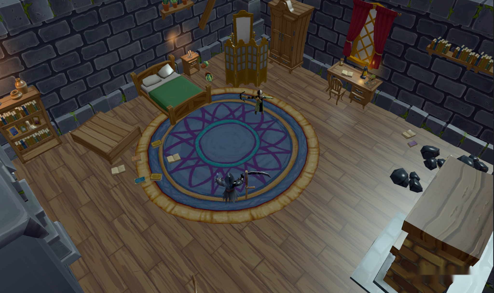
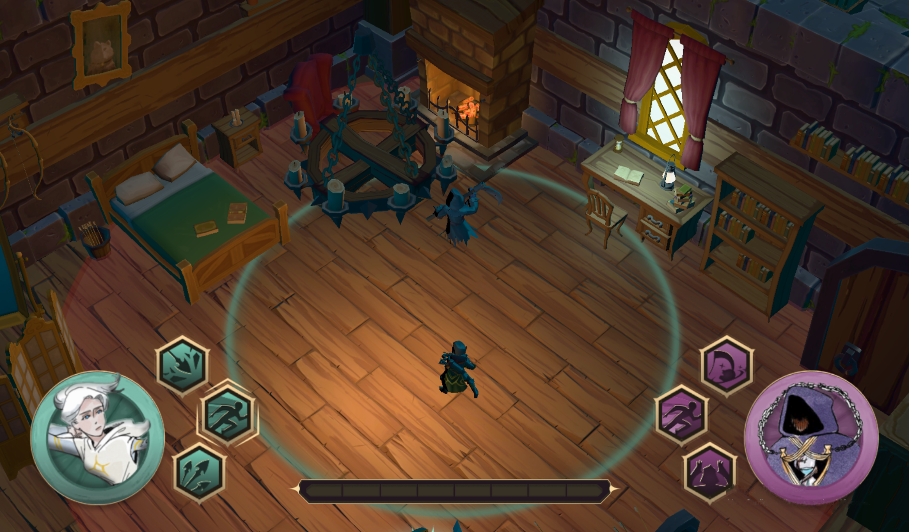
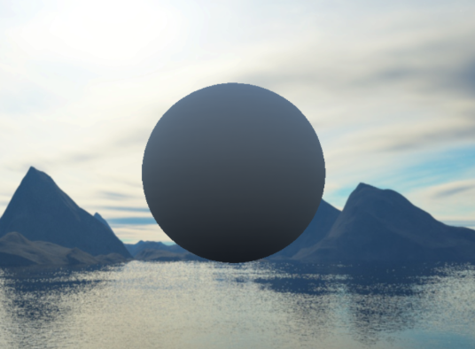
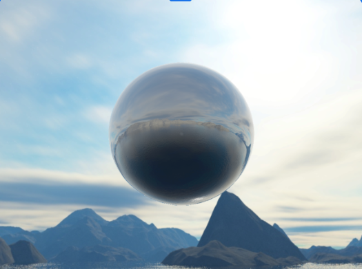
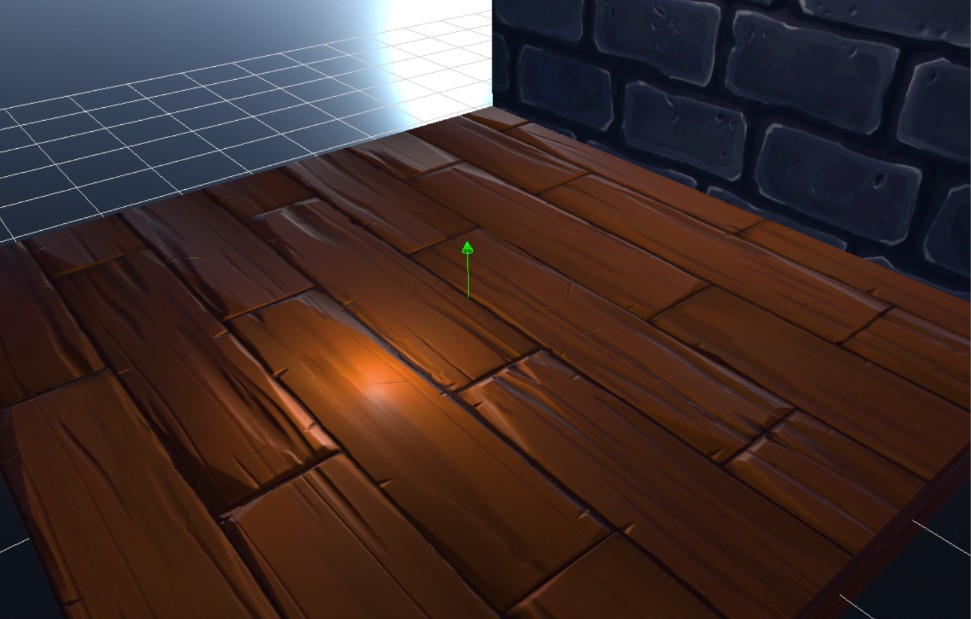
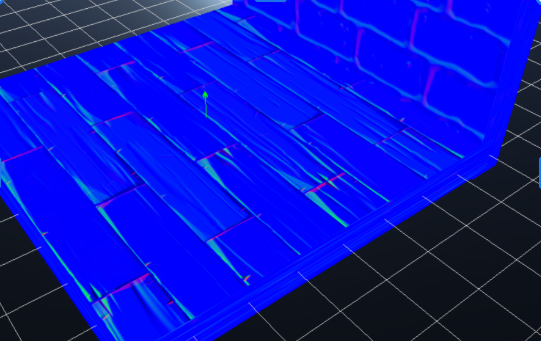

TECHNICAL CASE STUDY · SHADING
PBR and Image-Based Lighting
I collaborated with another engine programmer to implement metallic-roughness physically based rendering and image-based lighting for our custom DirectX 12 engine. I also developed several material rendering features independently.
Renderer Development Across Vertical Slices
These captures show the same room during two milestones of Bound by Death: Vertical Slice 1, before PBR and IBL were integrated, and Vertical Slice 3, after their implementation. The room, assets and other rendering features also changed between milestones, so this illustrates the engine’s broader visual development rather than an isolated PBR/IBL comparison.
Between Vertical Slice 1 and Vertical Slice 3, we integrated physically based rendering and image-based lighting into the engine. During this period, another team member also independently implemented HDR skybox texture support and IBL antialiasing, which are present in the later build.


Physically Based Rendering
Working with another engine programmer, I implemented a Cook–Torrance metallic-roughness shading model for our custom DirectX 12 engine. The implementation uses a GGX normal distribution, Smith visibility and Schlick Fresnel approximation to calculate specular lighting, alongside material properties including base color, metallic and roughness values.
We initially integrated the shading model into the engine's forward rendering pipeline.
Image-Based Lighting
We extended the shading model to account for light from the surrounding environment, using precomputed textures for diffuse and specular contributions. Following course materials and additional technical references, we implemented GPU preprocessing passes to generate:
- Diffuse irradiance cubemap: approximates indirect diffuse illumination from the environment.
- Prefiltered specular environment cubemap: stores reflections at different roughness levels across mip levels.
- BRDF integration lookup texture: provides precomputed terms for the specular lighting calculation.
The DirectX 12 implementation involved rendering cubemap faces, configuring render targets and shader pipelines, generating mip levels, and managing resource-state transitions. The resulting textures are sampled by the lighting shader at runtime.


Additional Material Features
Alongside the shared PBR and IBL work, I independently implemented three material features and their shader integration:
Normal Mapping
I added support for normal-map textures, decoding tangent-space normals and transforming them into world space using a tangent-bitangent-normal (TBN) basis. This allows surface detail to affect lighting without changing the mesh geometry.
Material Ambient Occlusion
I implemented support for material ambient occlusion, using an AO texture to modulate indirect lighting.
Emissive Materials
I added emissive texture and material-color support, contributing emissive values to the final shading result.
For these features, my work included the HLSL shader logic, texture bindings and material flags. The engine's underlying texture-loading system was already in place.
The following development captures show rendered wood and stone surfaces alongside their normal-map visualization.

